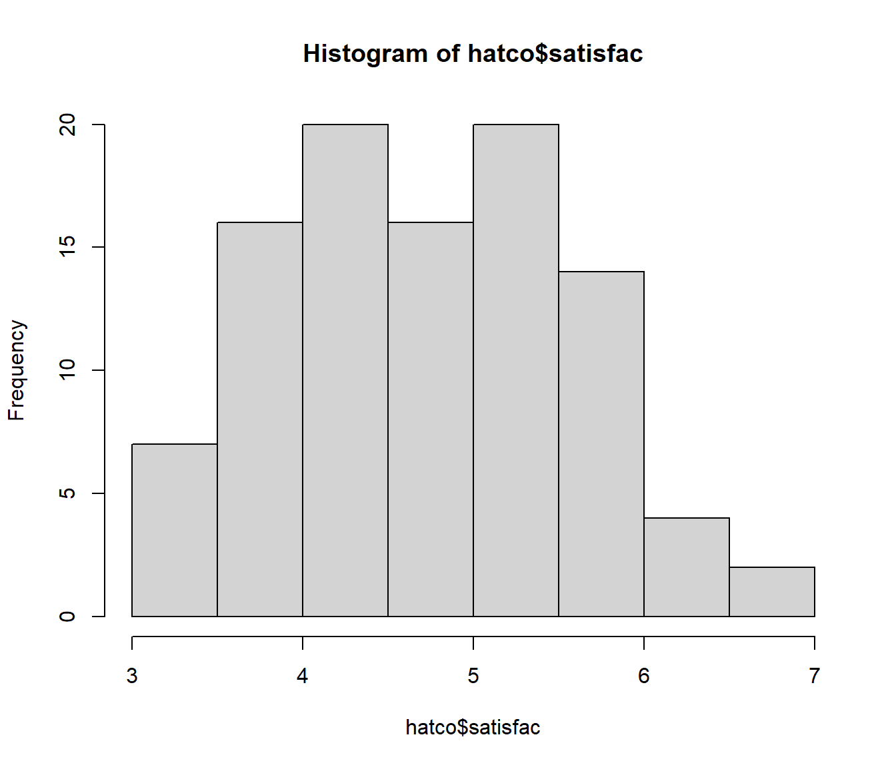
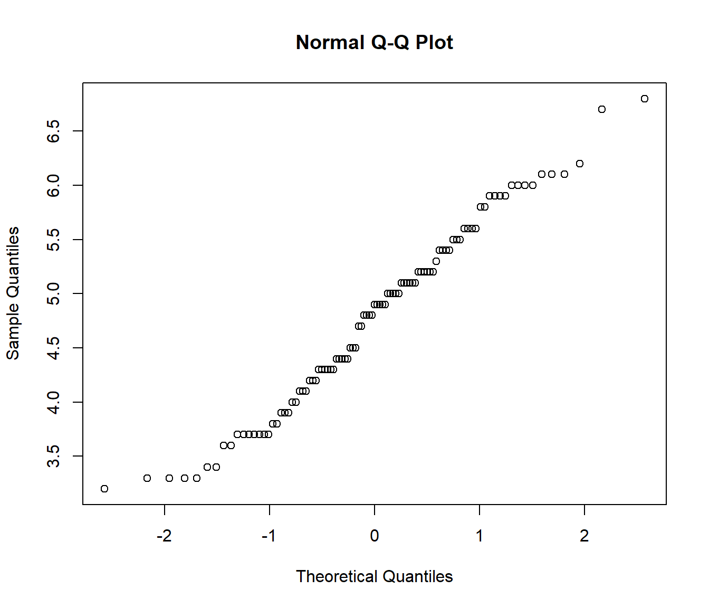
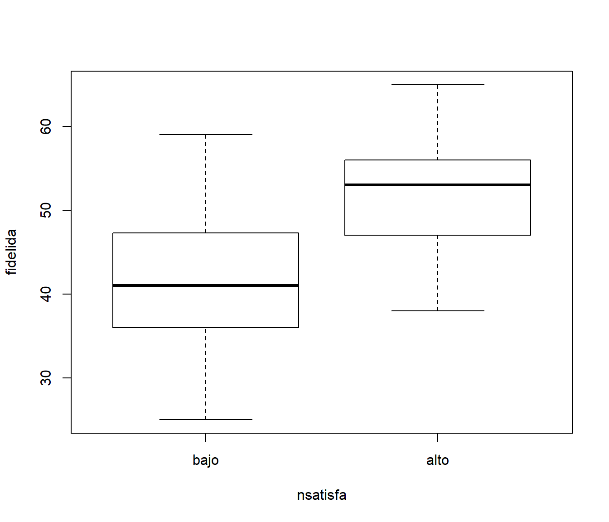
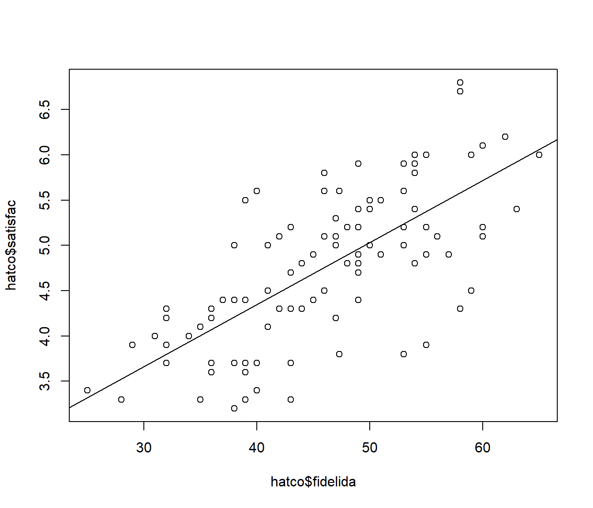
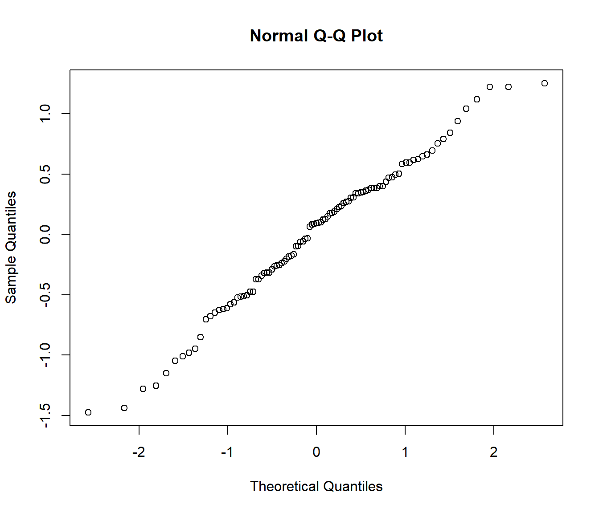
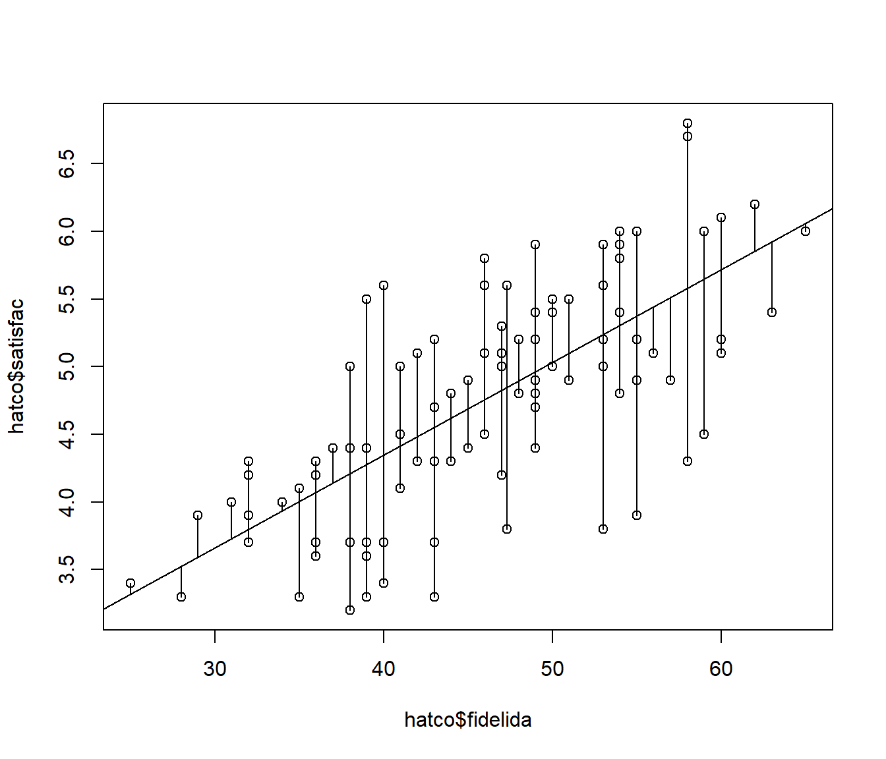
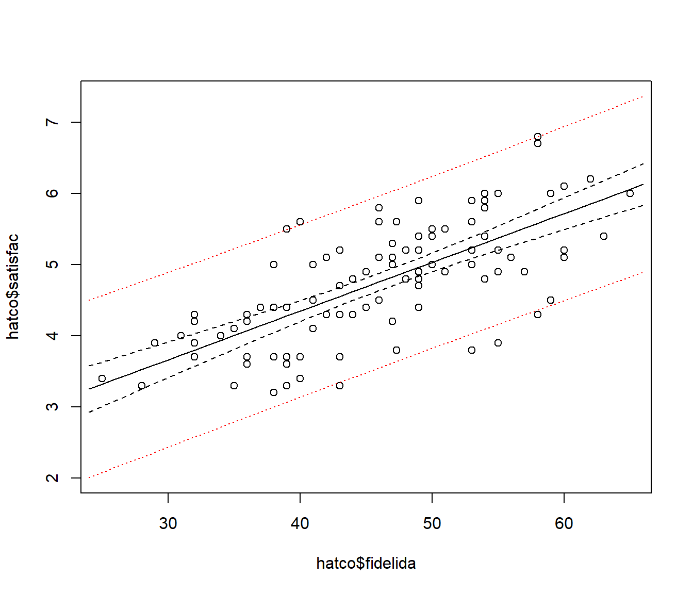

Capítulo 6 Inferencia estadística
El objetivo de este capítulo es ofrecer un primer acercamiento a la inferencia estadística, cubriendo de forma somera los siguientes apartados:
- contrastes de normalidad
- contrastes paramétricos y no paramétricos, con una y dos muestras
- regresión y correlación
- análisis de la varianza con un factor
En este capítulo utilizaremos como ejemplo los datos de clientes de una compañía de distribución industrial (HATCO) contenidos en el fichero hatco.RData.
load('datos/hatco.RData')Listado de etiquetas
as.data.frame(attr(hatco, "variable.labels"))## attr(hatco, "variable.labels")
## empresa Empresa
## tamano Tamaño de la empresa
## adquisic Estructura de adquisición
## tindustr Tipo de industria
## tsitcomp Tipo de situación de compra
## velocida Velocidad de entrega
## precio Nivel de precios
## flexprec Flexibilidad de precios
## imgfabri Imagen del fabricante
## servconj Servicio conjunto
## imgfvent Imagen de fuerza de ventas
## calidadp Calidad de producto
## fidelida Porcentaje de compra a HATCO
## satisfac Satisfacción global
## nfidelid Nivel de compra a HATCO
## nsatisfa Nivel de satisfacción6.1 Normalidad
Queremos hacer un estudio inferencial de la variable satisfac (satisfacción global). Lo primero que vamos a hacer es comprobar si, visualmente, los datos parecen razonablemente simétricos y si se pueden ajustar por una distribución normal
hist(hatco$satisfac)
qqnorm(hatco$satisfac)
shapiro.test(hatco$satisfac)##
## Shapiro-Wilk normality test
##
## data: hatco$satisfac
## W = 0.97608, p-value = 0.068136.2 Contrastes
6.2.1 Una muestra
Obtenemos un intervalo de confianza de satisfac
t.test(hatco$satisfac) # with(hatco, t.test(satisfac))##
## One Sample t-test
##
## data: hatco$satisfac
## t = 55.301, df = 98, p-value < 2.2e-16
## alternative hypothesis: true mean is not equal to 0
## 95 percent confidence interval:
## 4.603406 4.946089
## sample estimates:
## mean of x
## 4.774747Contrastamos si es razonable suponer que la media es 5
t.test(hatco$satisfac, mu=5)##
## One Sample t-test
##
## data: hatco$satisfac
## t = -2.6089, df = 98, p-value = 0.01051
## alternative hypothesis: true mean is not equal to 5
## 95 percent confidence interval:
## 4.603406 4.946089
## sample estimates:
## mean of x
## 4.774747Utilizando una confianza del 99%
t.test(hatco$satisfac, mu=5, conf.level=0.99)##
## One Sample t-test
##
## data: hatco$satisfac
## t = -2.6089, df = 98, p-value = 0.01051
## alternative hypothesis: true mean is not equal to 5
## 99 percent confidence interval:
## 4.547935 5.001560
## sample estimates:
## mean of x
## 4.774747Veamos si podemos afirmar que la media es menor que 5
t.test(hatco$satisfac, mu=5, alternative = 'less')##
## One Sample t-test
##
## data: hatco$satisfac
## t = -2.6089, df = 98, p-value = 0.005253
## alternative hypothesis: true mean is less than 5
## 95 percent confidence interval:
## -Inf 4.918122
## sample estimates:
## mean of x
## 4.774747¿Y mayor que 4.65?
t.test(hatco$satisfac, mu=4.65, alternative = 'greater')##
## One Sample t-test
##
## data: hatco$satisfac
## t = 1.4448, df = 98, p-value = 0.07585
## alternative hypothesis: true mean is greater than 4.65
## 95 percent confidence interval:
## 4.631373 Inf
## sample estimates:
## mean of x
## 4.774747El test de los rangos con signo de Wilcoxon es un contraste no paramétrico (exige que la distribución sea simétrica) que se puede utilizar como alternativa al contraste t de Student
with(hatco, wilcox.test(satisfac, mu=5))##
## Wilcoxon signed rank test with continuity correction
##
## data: satisfac
## V = 1574, p-value = 0.01303
## alternative hypothesis: true location is not equal to 56.2.2 Dos muestras
Disponemos de dos muestras independientes, el porcentaje de compra en las empresas con nivel de satisfacción bajo y alto, y asumimos que las varianzas son iguales
t.test(fidelida ~ nsatisfa, data = hatco, var.equal=TRUE)##
## Two Sample t-test
##
## data: fidelida by nsatisfa
## t = -6.5833, df = 97, p-value = 2.363e-09
## alternative hypothesis: true difference in means is not equal to 0
## 95 percent confidence interval:
## -12.915013 -6.931653
## sample estimates:
## mean in group bajo mean in group alto
## 41.72778 51.65111Si no se asume igualdad de varianzas, se calcula la variante Welch del test t
t.test(fidelida ~ nsatisfa, data = hatco)##
## Welch Two Sample t-test
##
## data: fidelida by nsatisfa
## t = -6.6901, df = 96.995, p-value = 1.437e-09
## alternative hypothesis: true difference in means is not equal to 0
## 95 percent confidence interval:
## -12.86727 -6.97940
## sample estimates:
## mean in group bajo mean in group alto
## 41.72778 51.65111Comparemos visualmente las varianzas
boxplot(fidelida ~ nsatisfa, data = hatco)
La comparación de las varianzas puede hacerse con el test F
var.test(fidelida ~ nsatisfa, data = hatco)##
## F test to compare two variances
##
## data: fidelida by nsatisfa
## F = 1.4248, num df = 53, denom df = 44, p-value = 0.2292
## alternative hypothesis: true ratio of variances is not equal to 1
## 95 percent confidence interval:
## 0.797925 2.505462
## sample estimates:
## ratio of variances
## 1.424804Una alternativa no paramétrica
bartlett.test(fidelida ~ nsatisfa, data = hatco)##
## Bartlett test of homogeneity of variances
##
## data: fidelida by nsatisfa
## Bartlett's K-squared = 1.4675, df = 1, p-value = 0.2257También puede utilizarse el test de Wilcoxon como alternativa al test t
wilcox.test(fidelida ~ nsatisfa, data = hatco)##
## Wilcoxon rank sum test with continuity correction
##
## data: fidelida by nsatisfa
## W = 430.5, p-value = 3.504e-08
## alternative hypothesis: true location shift is not equal to 0Si disponemos de datos apareados, por ejemplo nivel de precios e imagen de fuerza de ventas
with(hatco, t.test(precio, imgfvent, paired = TRUE))##
## Paired t-test
##
## data: precio and imgfvent
## t = -2.2347, df = 98, p-value = 0.02771
## alternative hypothesis: true difference in means is not equal to 0
## 95 percent confidence interval:
## -0.55114759 -0.03269079
## sample estimates:
## mean of the differences
## -0.2919192Y la correspondiente alternativa no paramétrica
with(hatco, wilcox.test(precio, imgfvent, paired = TRUE))##
## Wilcoxon signed rank test with continuity correction
##
## data: precio and imgfvent
## V = 1789.5, p-value = 0.02431
## alternative hypothesis: true location shift is not equal to 06.3 Regresión y correlación
6.3.1 Regresión lineal simple
Utilizando la función lm (modelo lineal) se puede llevar a cabo, entre otras muchas cosas, una regresión lineal simple
lm(satisfac ~ fidelida, data = hatco)##
## Call:
## lm(formula = satisfac ~ fidelida, data = hatco)
##
## Coefficients:
## (Intercept) fidelida
## 1.6074 0.0685modelo <- lm(satisfac ~ fidelida, data = hatco, na.action=na.exclude)
summary(modelo)##
## Call:
## lm(formula = satisfac ~ fidelida, data = hatco, na.action = na.exclude)
##
## Residuals:
## Min 1Q Median 3Q Max
## -1.47492 -0.37341 0.09358 0.38258 1.25258
##
## Coefficients:
## Estimate Std. Error t value Pr(>|t|)
## (Intercept) 1.607399 0.322436 4.985 2.71e-06 ***
## fidelida 0.068500 0.006848 10.003 < 2e-16 ***
## ---
## Signif. codes: 0 '***' 0.001 '**' 0.01 '*' 0.05 '.' 0.1 ' ' 1
##
## Residual standard error: 0.6058 on 97 degrees of freedom
## (1 observation deleted due to missingness)
## Multiple R-squared: 0.5078, Adjusted R-squared: 0.5027
## F-statistic: 100.1 on 1 and 97 DF, p-value: < 2.2e-16plot(hatco$fidelida, hatco$satisfac) # Cuidado con el orden de las variables
# with(hatco, plot(fidelida, satisfac)) # Alternativa empleando with
# plot(satisfac ~ fidelida, data = hatco) # Alternativa empleando fórmulas
abline(modelo)
Valores ajustados
fitted(modelo)## 1 2 3 4 5 6 7 8
## 3.799412 4.552917 4.895419 3.799412 5.580423 4.689918 4.758418 4.621417
## 9 10 11 12 13 14 15 16
## 5.922925 5.306421 3.799412 4.826919 4.278915 4.210415 5.306421 4.963919
## 17 18 19 20 21 22 23 24
## 4.210415 4.347416 5.306421 5.374922 4.415916 4.004913 5.374922 4.073414
## 25 26 27 28 29 30 31 32
## 4.963919 4.963919 4.073414 5.306421 4.963919 4.758418 4.552917 5.237921
## 33 34 35 36 37 38 39 40
## 5.717424 4.847469 4.004913 4.278915 4.621417 4.758418 3.593911 3.525410
## 41 42 43 44 45 46 47 48
## 4.347416 5.580423 5.237921 4.895419 4.210415 5.306421 5.374922 4.552917
## 49 50 51 52 53 54 55 56
## 5.511923 5.237921 4.415916 5.237921 5.032420 3.799412 4.278915 4.826919
## 57 58 59 60 61 62 63 64
## 5.854425 6.059926 4.758418 5.032420 5.306421 5.717424 4.826919 4.073414
## 65 66 67 68 69 70 71 72
## 4.347416 4.689918 5.648924 4.758418 5.580423 4.963919 5.032420 5.374922
## 73 74 75 76 77 78 79 80
## 5.100920 5.717424 4.415916 4.963919 4.484416 4.826919 4.278915 5.443422
## 81 82 83 84 85 86 87 88
## 5.648924 4.847469 4.415916 4.141914 5.237921 4.552917 5.100920 4.073414
## 89 90 91 92 93 94 95 96
## 3.936413 5.717424 4.963919 4.278915 4.552917 4.073414 3.730912 3.319909
## 97 98 99 100
## 5.717424 4.210415 4.484416 NAResiduos
head(resid(modelo))## 1 2 3 4 5 6
## 0.4005878 -0.2529168 0.3045811 0.1005878 1.2195769 -0.2899177qqnorm(resid(modelo))
shapiro.test(resid(modelo))##
## Shapiro-Wilk normality test
##
## data: resid(modelo)
## W = 0.98515, p-value = 0.3325plot(hatco$fidelida, hatco$satisfac)
abline(modelo)
# segments(hatco$fidelida, fitted(modelo), hatco$fidelida, hatco$satisfac)
with(hatco, segments(fidelida, fitted(modelo), fidelida, satisfac))
plot(fitted(modelo), resid(modelo))
Banda de confianza
predict(modelo, interval='confidence')## fit lwr upr
## 1 3.799412 3.571263 4.027561
## 2 4.552917 4.424306 4.681528
## 3 4.895419 4.772225 5.018613
## 4 3.799412 3.571263 4.027561
## 5 5.580423 5.380031 5.780815
## 6 4.689918 4.567906 4.811929
## 7 4.758418 4.637529 4.879307
## 8 4.621417 4.496801 4.746033
## 9 5.922925 5.665048 6.180803
## 10 5.306421 5.146011 5.466832
## 11 3.799412 3.571263 4.027561
## 12 4.826919 4.705631 4.948206
## 13 4.278915 4.123089 4.434741
## 14 4.210415 4.045670 4.375159
## 15 5.306421 5.146011 5.466832
## 16 4.963919 4.837379 5.090459
## 17 4.210415 4.045670 4.375159
## 18 4.347416 4.199793 4.495038
## 19 5.306421 5.146011 5.466832
## 20 5.374922 5.205264 5.544580
## 21 4.415916 4.275658 4.556174
## 22 4.004913 3.810147 4.199680
## 23 5.374922 5.205264 5.544580
## 24 4.073414 3.889113 4.257714
## 25 4.963919 4.837379 5.090459
## 26 4.963919 4.837379 5.090459
## 27 4.073414 3.889113 4.257714
## 28 5.306421 5.146011 5.466832
## 29 4.963919 4.837379 5.090459
## 30 4.758418 4.637529 4.879307
## 31 4.552917 4.424306 4.681528
## 32 5.237921 5.086103 5.389740
## 33 5.717424 5.494745 5.940103
## 34 4.847469 4.725765 4.969172
## 35 4.004913 3.810147 4.199680
## 36 4.278915 4.123089 4.434741
## 37 4.621417 4.496801 4.746033
## 38 4.758418 4.637529 4.879307
## 39 3.593911 3.330292 3.857530
## 40 3.525410 3.249642 3.801179
## 41 4.347416 4.199793 4.495038
## 42 5.580423 5.380031 5.780815
## 43 5.237921 5.086103 5.389740
## 44 4.895419 4.772225 5.018613
## 45 4.210415 4.045670 4.375159
## 46 5.306421 5.146011 5.466832
## 47 5.374922 5.205264 5.544580
## 48 4.552917 4.424306 4.681528
## 49 5.511923 5.322196 5.701650
## 50 5.237921 5.086103 5.389740
## 51 4.415916 4.275658 4.556174
## 52 5.237921 5.086103 5.389740
## 53 5.032420 4.901205 5.163635
## 54 3.799412 3.571263 4.027561
## 55 4.278915 4.123089 4.434741
## 56 4.826919 4.705631 4.948206
## 57 5.854425 5.608471 6.100378
## 58 6.059926 5.777748 6.342104
## 59 4.758418 4.637529 4.879307
## 60 5.032420 4.901205 5.163635
## 61 5.306421 5.146011 5.466832
## 62 5.717424 5.494745 5.940103
## 63 4.826919 4.705631 4.948206
## 64 4.073414 3.889113 4.257714
## 65 4.347416 4.199793 4.495038
## 66 4.689918 4.567906 4.811929
## 67 5.648924 5.437531 5.860316
## 68 4.758418 4.637529 4.879307
## 69 5.580423 5.380031 5.780815
## 70 4.963919 4.837379 5.090459
## 71 5.032420 4.901205 5.163635
## 72 5.374922 5.205264 5.544580
## 73 5.100920 4.963837 5.238003
## 74 5.717424 5.494745 5.940103
## 75 4.415916 4.275658 4.556174
## 76 4.963919 4.837379 5.090459
## 77 4.484416 4.350544 4.618289
## 78 4.826919 4.705631 4.948206
## 79 4.278915 4.123089 4.434741
## 80 5.443422 5.263964 5.622881
## 81 5.648924 5.437531 5.860316
## 82 4.847469 4.725765 4.969172
## 83 4.415916 4.275658 4.556174
## 84 4.141914 3.967647 4.316181
## 85 5.237921 5.086103 5.389740
## 86 4.552917 4.424306 4.681528
## 87 5.100920 4.963837 5.238003
## 88 4.073414 3.889113 4.257714
## 89 3.936413 3.730815 4.142011
## 90 5.717424 5.494745 5.940103
## 91 4.963919 4.837379 5.090459
## 92 4.278915 4.123089 4.434741
## 93 4.552917 4.424306 4.681528
## 94 4.073414 3.889113 4.257714
## 95 3.730912 3.491126 3.970697
## 96 3.319909 3.006980 3.632839
## 97 5.717424 5.494745 5.940103
## 98 4.210415 4.045670 4.375159
## 99 4.484416 4.350544 4.618289
## 100 NA NA NABanda de predicción
head(predict(modelo, interval='prediction'))## fit lwr upr
## 1 3.799412 2.575563 5.023261
## 2 4.552917 3.343663 5.762171
## 3 4.895419 3.686729 6.104109
## 4 3.799412 2.575563 5.023261
## 5 5.580423 4.361444 6.799403
## 6 4.689918 3.481348 5.898487Representación gráfica de las bandas
bandas.frame <- data.frame(fidelida=24:66)
bc <- predict(modelo, interval = 'confidence', newdata = bandas.frame)
bp <- predict(modelo, interval = 'prediction', newdata = bandas.frame)
plot(hatco$fidelida, hatco$satisfac, ylim = range(hatco$satisfac, bp, na.rm = TRUE))
matlines(bandas.frame$fidelida, bc, lty=c(1,2,2), col='black')
matlines(bandas.frame$fidelida, bp, lty=c(0,3,3), col='red')
6.3.2 Correlación
Coeficiente de correlación de Pearson
cor(hatco$fidelida, hatco$satisfac, use='complete.obs')## [1] 0.712581cor(hatco[,6:14], use='complete.obs')## velocida precio flexprec imgfabri servconj
## velocida 1.00000000 -0.35439461 0.51879732 0.04885481 0.60908594
## precio -0.35439461 1.00000000 -0.48550163 0.27150666 0.51134698
## flexprec 0.51879732 -0.48550163 1.00000000 -0.11472112 0.07496499
## imgfabri 0.04885481 0.27150666 -0.11472112 1.00000000 0.29800272
## servconj 0.60908594 0.51134698 0.07496499 0.29800272 1.00000000
## imgfvent 0.08084452 0.18873090 -0.03801323 0.79015164 0.24641510
## calidadp -0.48984768 0.46822563 -0.44542562 0.19904126 -0.06152068
## fidelida 0.67428681 0.07682487 0.57807750 0.22442574 0.69802972
## satisfac 0.64981476 0.02636286 0.53057615 0.47553688 0.63054720
## imgfvent calidadp fidelida satisfac
## velocida 0.08084452 -0.48984768 0.67428681 0.64981476
## precio 0.18873090 0.46822563 0.07682487 0.02636286
## flexprec -0.03801323 -0.44542562 0.57807750 0.53057615
## imgfabri 0.79015164 0.19904126 0.22442574 0.47553688
## servconj 0.24641510 -0.06152068 0.69802972 0.63054720
## imgfvent 1.00000000 0.18052945 0.26674626 0.34349253
## calidadp 0.18052945 1.00000000 -0.20401261 -0.28687427
## fidelida 0.26674626 -0.20401261 1.00000000 0.71258104
## satisfac 0.34349253 -0.28687427 0.71258104 1.00000000cor.test(hatco$fidelida, hatco$satisfac)##
## Pearson's product-moment correlation
##
## data: hatco$fidelida and hatco$satisfac
## t = 10.003, df = 97, p-value < 2.2e-16
## alternative hypothesis: true correlation is not equal to 0
## 95 percent confidence interval:
## 0.5995024 0.7977691
## sample estimates:
## cor
## 0.712581El coeficiente de correlación de Spearman es una variante no paramétrica
cor.test(hatco$fidelida, hatco$satisfac, method='spearman')##
## Spearman's rank correlation rho
##
## data: hatco$fidelida and hatco$satisfac
## S = 46601, p-value < 2.2e-16
## alternative hypothesis: true rho is not equal to 0
## sample estimates:
## rho
## 0.71180396.4 Análisis de la varianza
6.4.1 ANOVA con un factor
Vamos a estudiar si hay diferencias en las medias de la variable satisfac (satisfacción global) entre los diferentes grupos definidos por nfidelid (nivel de compra), utilizando el procedimiento clásico de análisis de la varianza. Este procedimiento exige normalidad y homocedasticidad.
table(hatco$nfidelid)##
## bajo medio alto
## 3 64 33tapply(hatco$satisfac, hatco$nfidelid, mean, na.rm = TRUE)## bajo medio alto
## 3.533333 4.498437 5.443750La variable explicativa tiene que ser obligatoriamente de tipo factor. Por coherencia con la función (general) lm, la variación entre grupos está etiquetada nfidelid, y la variación dentro de los grupos como Residuals
anova(lm(satisfac~nfidelid, data = hatco))## Analysis of Variance Table
##
## Response: satisfac
## Df Sum Sq Mean Sq F value Pr(>F)
## nfidelid 2 23.832 11.9158 23.588 4.647e-09 ***
## Residuals 96 48.495 0.5052
## ---
## Signif. codes: 0 '***' 0.001 '**' 0.01 '*' 0.05 '.' 0.1 ' ' 1Como alternativa, se puede utilizar la función aov
aov(satisfac~nfidelid, data = hatco)## Call:
## aov(formula = satisfac ~ nfidelid, data = hatco)
##
## Terms:
## nfidelid Residuals
## Sum of Squares 23.83161 48.49526
## Deg. of Freedom 2 96
##
## Residual standard error: 0.7107454
## Estimated effects may be unbalanced
## 1 observation deleted due to missingnesssummary(aov(satisfac~nfidelid, data = hatco))## Df Sum Sq Mean Sq F value Pr(>F)
## nfidelid 2 23.83 11.916 23.59 4.65e-09 ***
## Residuals 96 48.50 0.505
## ---
## Signif. codes: 0 '***' 0.001 '**' 0.01 '*' 0.05 '.' 0.1 ' ' 1
## 1 observation deleted due to missingnessComparaciones entre pares de variables
pairwise.t.test(hatco$satisfac, hatco$nfidelid)##
## Pairwise comparisons using t tests with pooled SD
##
## data: hatco$satisfac and hatco$nfidelid
##
## bajo medio
## medio 0.024 -
## alto 4.6e-05 5.5e-08
##
## P value adjustment method: holmRelajamos la hipótesis de varianzas iguales
oneway.test(satisfac~nfidelid, data = hatco)##
## One-way analysis of means (not assuming equal variances)
##
## data: satisfac and nfidelid
## F = 35.013, num df = 2.0000, denom df = 6.7661, p-value =
## 0.0002697Podemos utilizar el test de Bartlett para contrastar la igualdad de varianzas
bartlett.test(satisfac~nfidelid, data = hatco)##
## Bartlett test of homogeneity of variances
##
## data: satisfac by nfidelid
## Bartlett's K-squared = 1.4922, df = 2, p-value = 0.4742Representación gráfica
medias <- tapply(hatco$satisfac, hatco$nfidelid, mean, na.rm = TRUE)
desviaciones <- tapply(hatco$satisfac, hatco$nfidelid, sd, na.rm = TRUE)
n <- tapply(hatco$satisfac[!is.na(hatco$satisfac)], hatco$nfidelid[!is.na(hatco$satisfac)], length)
errores <- desviaciones/sqrt(n)
stripchart(hatco$satisfac~hatco$nfidelid, method='jitter', jit=0.01, pch=18, col='grey', vertical = TRUE)
arrows(1:3, medias+errores, 1:3, medias-errores, angle=90, code=3, lwd=2, col='orange')
points(1:3, medias, pch=4, lwd=2, cex=2, col='orange')
6.4.2 Test de Kruskal-Wallis
Alternativa no paramétrica al análisis de la varianza con un factor
kruskal.test(satisfac~nfidelid, data = hatco)##
## Kruskal-Wallis rank sum test
##
## data: satisfac by nfidelid
## Kruskal-Wallis chi-squared = 31.073, df = 2, p-value = 1.789e-07